File: 000000.gt.txt (if the image is defective, simply delete all Arabic text and the line will be excluded)

بلغة واحدة استفرغت تلك القوة عليهما؛ وكذلك إن تكلم بأكثر من
File: 000001.gt.txt (if the image is defective, simply delete all Arabic text and the line will be excluded)

لغتين ، وعلى حساب ذلك تكون الترجمة لجميع اللغات . وكلما كان الباب
File: 000002.gt.txt (if the image is defective, simply delete all Arabic text and the line will be excluded)

من العلم أعسر وأضيق ، والعلماء به أقل ، كان أشد على المترجم ، وأجدر
File: 000003.gt.txt (if the image is defective, simply delete all Arabic text and the line will be excluded)

أن يخطئ فيه . ولن تجد البتة مترجما يفي بواحد من هؤلاء العلماء . 39
File: 000004.gt.txt (if the image is defective, simply delete all Arabic text and the line will be excluded)

هذا قولنا في كتب الهندسة، والتنجيم ، والحساب ، واللحون ؛ فكيف
File: 000005.gt.txt (if the image is defective, simply delete all Arabic text and the line will be excluded)

لو كانت هذه الكتب كتب دين وإخبار عن الله - عز وجل- بما يجوز
File: 000006.gt.txt (if the image is defective, simply delete all Arabic text and the line will be excluded)

عليه مما لا يجوز عليه ، حتى يريد أن يتكلم على تصحيح المعاني في الطبائع ،
File: 000007.gt.txt (if the image is defective, simply delete all Arabic text and the line will be excluded)

ويكون ذلك معقودا بالتوحيد ، ويتكلم في وجوه الإخبار واحتمالاته
File: 000008.gt.txt (if the image is defective, simply delete all Arabic text and the line will be excluded)

للوجوه ، ويكون ذلك متضمنا بما يجوز على الله تعالى ، مما لا يجوز ،
File: 000009.gt.txt (if the image is defective, simply delete all Arabic text and the line will be excluded)

وبما يجوز على الناس مما لا يجوز ، وحتى يعلم مستقر العام والخاص ،
File: 000010.gt.txt (if the image is defective, simply delete all Arabic text and the line will be excluded)

والمقابلات التي تلقى الأخبار العامية المخرج فيجعلها خاصية ؛ وحتى يعرف
File: 000011.gt.txt (if the image is defective, simply delete all Arabic text and the line will be excluded)

من الخبر ما يخصه الخبر الذي هو أثر ، مما يخصه الخبر الذي هو قرآن ،
File: 000012.gt.txt (if the image is defective, simply delete all Arabic text and the line will be excluded)

وما يخصه العقل مما تخصه العادة أو الحال الرادة له عن العموم ؛ وحتى يعرف
File: 000013.gt.txt (if the image is defective, simply delete all Arabic text and the line will be excluded)

ما يكون من الخبر صدقا أو كذبا ، وما لا يجوز أن يسمى بصدق ولا كذب ؛
File: 000014.gt.txt (if the image is defective, simply delete all Arabic text and the line will be excluded)

وحتى يعرف اسم الصدق والكذب ، وعلى كم معنى يشتمل ويجتمع ،
File: 000015.gt.txt (if the image is defective, simply delete all Arabic text and the line will be excluded)

وعند فقد أي معنى ينقلب ذلك الاسم ؛ وكذلك معرفة المحال من
File: 000016.gt.txt (if the image is defective, simply delete all Arabic text and the line will be excluded)

الصحيح ، وأي شيء تأويل المحال ؛ وهل يسمى المحال كذبا أم لا يجوز
File: 000017.gt.txt (if the image is defective, simply delete all Arabic text and the line will be excluded)

الرأس والحاجبين وأشفار العينين يكون مع الولادة ، وإنما يعرض لما يتولد
File: 000018.gt.txt (if the image is defective, simply delete all Arabic text and the line will be excluded)

من فضول البدن .
File: 000019.gt.txt (if the image is defective, simply delete all Arabic text and the line will be excluded)

وقد زعم ناس أن حكم شعر الرأس خلاف حكم أشفار العينين ،
File: 000020.gt.txt (if the image is defective, simply delete all Arabic text and the line will be excluded)

وقد ذكرنا ذلك في موضعه من باب القول في الشعر ، وهذه الخصال من
File: 000021.gt.txt (if the image is defective, simply delete all Arabic text and the line will be excluded)

أماكن شعر النساء ، والخصيان والفحولة فيه سواء، وإنما يعرض لسوى
File: 000022.gt.txt (if the image is defective, simply delete all Arabic text and the line will be excluded)

52 ذلك من الشعر الحادث الأصول ، الزائد في النبات. ألا ترى أن المرأة
File: 000023.gt.txt (if the image is defective, simply delete all Arabic text and the line will be excluded)

وكذلك النساء في جميع ذلك .
File: 000024.gt.txt (if the image is defective, simply delete all Arabic text and the line will be excluded)

والمرأة ربما كان في قصاص مقاديم شعر رأسها ارتفاع ، وليس
File: 000025.gt.txt (if the image is defective, simply delete all Arabic text and the line will be excluded)

ذلك بنزع ولا جلح ، إذا لم يكن ذلك حادثا يحدثه الطعن في السن .
File: 000026.gt.txt (if the image is defective, simply delete all Arabic text and the line will be excluded)

وتكون مقاطع شعر رأسه ومنتهى حدود قصاصه، كمقاطع شعر المرأة
File: 000027.gt.txt (if the image is defective, simply delete all Arabic text and the line will be excluded)

ومنتهى قصاصها ، وليس شعرها كلما دنا من موضع الملاسة والانجراد
File: 000028.gt.txt (if the image is defective, simply delete all Arabic text and the line will be excluded)

يكون أرق حتى يقل ويضمحل ، ولكنه ينبت في مقدار ذلك الجلد على
File: 000029.gt.txt (if the image is defective, simply delete all Arabic text and the line will be excluded)

نبات واحد ، ثم ينقطع عند منتهاه انقطاعا واحدا . والمرأة ربما كانت
File: 000030.gt.txt (if the image is defective, simply delete all Arabic text and the line will be excluded)

سبلاء، وتكون لها شعرات رقيقة زغبية كالعذار موصولا بأصداغها ،
File: 000031.gt.txt (if the image is defective, simply delete all Arabic text and the line will be excluded)

ولا يعرض ذلك للخصي إلا من علة في الخصاء ، ولا يرى أبدا بعد مقطع
File: 000032.gt.txt (if the image is defective, simply delete all Arabic text and the line will be excluded)

من صدغيه شيء من الشعر ، لا من رقيقه ولا من كثيفه .
File: 000033.gt.txt (if the image is defective, simply delete all Arabic text and the line will be excluded)

في الحساب ؛ وعلى دس المموه ؛ تعالى الله عز وجل عن ذلك علوا كبيرا .
File: 000034.gt.txt (if the image is defective, simply delete all Arabic text and the line will be excluded)

( خضوع النتاج المركب للطبيعة )
File: 000035.gt.txt (if the image is defective, simply delete all Arabic text and the line will be excluded)

ولو كان أمر النتاج وما يحدث بالتراكيب ويخرج من التزاويج ؛ إلى
File: 000036.gt.txt (if the image is defective, simply delete all Arabic text and the line will be excluded)

تقدير الرأي وما هو أقرب إلى الظن ؛ لكانت الأظلاف(1) تجري مجرى
File: 000037.gt.txt (if the image is defective, simply delete all Arabic text and the line will be excluded)

الحوافر والأخفاف . ألا ترى أن قرابة الضأن من الماعز ؛ كقرابة البخت من
File: 000038.gt.txt (if the image is defective, simply delete all Arabic text and the line will be excluded)

العراب ؛ والحيل من الحمير ! !
File: 000039.gt.txt (if the image is defective, simply delete all Arabic text and the line will be excluded)

وسبيل نتائج الظلف على خلاف ذلك ؛ لأن التيس - على شدة غلمته
File: 000040.gt.txt (if the image is defective, simply delete all Arabic text and the line will be excluded)

- لا يعرض للنعجة [ إلا بالقليل الذي لا يذكر . وكذلك ما يحدث بينهما من
File: 000041.gt.txt (if the image is defective, simply delete all Arabic text and the line will be excluded)

الولد كذلك : إما ألا يتم خلقه ، وإما ألا يعيش (2) ] ؛ وكذلك الكبش
File: 000042.gt.txt (if the image is defective, simply delete all Arabic text and the line will be excluded)

والعنز فضلا عن أن يكون بينهما نتاج (3) لأنه قد يضرب الجنس في الجنس
File: 000043.gt.txt (if the image is defective, simply delete all Arabic text and the line will be excluded)

الذي لا يلقحه ؛ ولا يكون اللقاح إلا بعد ضراب .
File: 000044.gt.txt (if the image is defective, simply delete all Arabic text and the line will be excluded)

وطلب التيس للنعجة قليل (4) وأقل من القليل ؛ وكذلك الكبش
File: 000045.gt.txt (if the image is defective, simply delete all Arabic text and the line will be excluded)

للعنز ؛ وأقل من ذلك أن تتلاقح (5) ولا يبقى ذلك الولد البتة (6)
File: 000046.gt.txt (if the image is defective, simply delete all Arabic text and the line will be excluded)

وقد تجاسر ناس على توليد أبواب من هذا الشكل ؛ فادعوا أمورا ؛
File: 000047.gt.txt (if the image is defective, simply delete all Arabic text and the line will be excluded)

ولم يحفلوا بالتقريع والتكذيب عند مسألة البرهان ! !
File: 000048.gt.txt (if the image is defective, simply delete all Arabic text and the line will be excluded)

( زعم في الزرافة )
File: 000049.gt.txt (if the image is defective, simply delete all Arabic text and the line will be excluded)

زعموا أن الزرافة خلق مركب من بين الناقة الوحشية وبين البقرة الوحشية
File: 000050.gt.txt (if the image is defective, simply delete all Arabic text and the line will be excluded)

إلا أن الخصي من صباه ؛ يحسن صنعة الدبوق (1) ، ويجيد دعاء الحمام
File: 000051.gt.txt (if the image is defective, simply delete all Arabic text and the line will be excluded)

الطوري (2) ، وما شئت من صغار الصناعات .
File: 000052.gt.txt (if the image is defective, simply delete all Arabic text and the line will be excluded)

وقد زعم البصريون أن حديجا(3) الخصي ، خادم المثنى بن زهير ،
File: 000053.gt.txt (if the image is defective, simply delete all Arabic text and the line will be excluded)

كان يجاري(4) مثنى في البصر بالحمام ، وفي صحة الفراسة ، وإتقان المعرفة ،
File: 000054.gt.txt (if the image is defective, simply delete all Arabic text and the line will be excluded)

وجودة الرياضة . وسنذكر حاله في باب القول في الحمام إن شاء الله تعالى .
File: 000055.gt.txt (if the image is defective, simply delete all Arabic text and the line will be excluded)

54 هذا قولهم فيمن خصي من الصقالبة . وملوكنا لعقول خصيان
File: 000056.gt.txt (if the image is defective, simply delete all Arabic text and the line will be excluded)

خراسان أحمد ، وهم قليل ، ولذلك لم نأت من أمرهم بشيء مشهور ،
File: 000057.gt.txt (if the image is defective, simply delete all Arabic text and the line will be excluded)

( خصيان السند )
File: 000058.gt.txt (if the image is defective, simply delete all Arabic text and the line will be excluded)

وأمر مذكور .
File: 000059.gt.txt (if the image is defective, simply delete all Arabic text and the line will be excluded)

وأما السند ، فلم يكن فيهم أيضا من الخصيان إلا النفر الذين كان
File: 000060.gt.txt (if the image is defective, simply delete all Arabic text and the line will be excluded)

خصاهم موسى بن كعب ، وقد رأيت أنا بعضهم ، وزعم لي أنه خصى أربعة
File: 000061.gt.txt (if the image is defective, simply delete all Arabic text and the line will be excluded)

هو أحدهم ، ورأيت الخصاء ، قد جذبه إلى حب الحمام ، وعمل التكك(5) ،
File: 000062.gt.txt (if the image is defective, simply delete all Arabic text and the line will be excluded)

والهراش بالديوك ، وهذا شيء لم يجر منه على عرق ، وإنما قاده إليه قطع
File: 000063.gt.txt (if the image is defective, simply delete all Arabic text and the line will be excluded)

ذلك العضو .
File: 000064.gt.txt (if the image is defective, simply delete all Arabic text and the line will be excluded)

القتل قتلة صريحة(1) مريحة - إلا أصغر عند الله تعالى ، وأسهل على هذا
File: 000065.gt.txt (if the image is defective, simply delete all Arabic text and the line will be excluded)

المظلوم من طول التعذيب . والله تعالى بالمرصاد .
File: 000066.gt.txt (if the image is defective, simply delete all Arabic text and the line will be excluded)

( خصاء البهائم )
File: 000067.gt.txt (if the image is defective, simply delete all Arabic text and the line will be excluded)

وأما خصاء البهائم ، فمنه الوجاء ، وهو أن يشد عصب مجامع الخصية
File: 000068.gt.txt (if the image is defective, simply delete all Arabic text and the line will be excluded)

من أصل القضيب ، حتى إذا ندرت البيضة ، وجحظت الخصية ، وجأها
File: 000069.gt.txt (if the image is defective, simply delete all Arabic text and the line will be excluded)

حتى يرضها ، فهي عند ذلك تذبل وتنخسف ، وتذوي وتستدق ، حتى
File: 000070.gt.txt (if the image is defective, simply delete all Arabic text and the line will be excluded)

تذهب قواها ، وتنسد المجاري إليها ، ويسري ذلك الفساد إلى موضع تربية
File: 000071.gt.txt (if the image is defective, simply delete all Arabic text and the line will be excluded)

النطفة ، فيمنعها من أن تكثر أو تعذب أو تخثر .
File: 000072.gt.txt (if the image is defective, simply delete all Arabic text and the line will be excluded)

ومنها ما يكون بالشد والعصب، وشدة التحزيق، والعقد بالخيط الشديد
File: 000073.gt.txt (if the image is defective, simply delete all Arabic text and the line will be excluded)

الوتير الشديد الفتل ، فإذا تركه على ذلك عمل فيه وحز ، أو أ كل ومنعه من
File: 000074.gt.txt (if the image is defective, simply delete all Arabic text and the line will be excluded)

أن يجزي إليه الغذاء ، فلا يلبث أن ينقطع ويسقط .
File: 000075.gt.txt (if the image is defective, simply delete all Arabic text and the line will be excluded)

ومنه الامتلاخ ، وهو امتلاخ البيضتين .
File: 000076.gt.txt (if the image is defective, simply delete all Arabic text and the line will be excluded)

( خصاء الناس )
File: 000077.gt.txt (if the image is defective, simply delete all Arabic text and the line will be excluded)

فأما خصاء الناس ، فإن للخاصي حديدة مرهفة محماة ، وهي الحاسمة،
File: 000078.gt.txt (if the image is defective, simply delete all Arabic text and the line will be excluded)

وهي القاطعة. قال أبو زيد: يقال خصيت الدابة أخصيها خصاء،
File: 000079.gt.txt (if the image is defective, simply delete all Arabic text and the line will be excluded)

ووجأتها أجؤها وجاء . ويقال : برئت إليك من الخصاء أو الوجاء ، ولا يقال
File: 000080.gt.txt (if the image is defective, simply delete all Arabic text and the line will be excluded)

ذلك إلا لما كان قريب العهد لم يبرأ منه ، فإذا برئ لم يقل له(2) .
File: 000081.gt.txt (if the image is defective, simply delete all Arabic text and the line will be excluded)

وفالوا ، الخصي لا يصلع كما لا تصلع المرأة ، وإذا قطع العضو الذي
File: 000082.gt.txt (if the image is defective, simply delete all Arabic text and the line will be excluded)

كان به فحلا تاما، أخرجه ذلك من أكثر معاني الفحول وصفاتهم ،
File: 000083.gt.txt (if the image is defective, simply delete all Arabic text and the line will be excluded)

وإذا أخرجه من ذلك الكمال ، صيره كالبغل الذي ليس هو حمارا ولا فرسا ،
File: 000084.gt.txt (if the image is defective, simply delete all Arabic text and the line will be excluded)

وتصير طباعه مقسومة على طباع الذكر والأنثى ، وربما لم يخلص له الخلق
File: 000085.gt.txt (if the image is defective, simply delete all Arabic text and the line will be excluded)

ولم يصف ، حتى يصير كالخلق من أخلاق الرجال ، أو يلحق بمثله من
File: 000086.gt.txt (if the image is defective, simply delete all Arabic text and the line will be excluded)

أخلاق النساء ، ولكنه يقع ممزوجا مركبا ، فيخرج إلى أن يكون مذبذبا ،
File: 000087.gt.txt (if the image is defective, simply delete all Arabic text and the line will be excluded)

لا إلى هؤلاء ولا إلى هؤلاء . وربما خرجت النتيجة وما يولده التركيب ،
File: 000088.gt.txt (if the image is defective, simply delete all Arabic text and the line will be excluded)

عن مقدار معاني الأبوين ، كما يجوز عمر البغل عمر أبويه ، وكذلك ما عددنا
File: 000089.gt.txt (if the image is defective, simply delete all Arabic text and the line will be excluded)

( طلب النسل )
File: 000090.gt.txt (if the image is defective, simply delete all Arabic text and the line will be excluded)

في صدر هذا الكلام(1) .
File: 000091.gt.txt (if the image is defective, simply delete all Arabic text and the line will be excluded)

وقالوا(2) : وللإنسان قوى معروفة المقدار ، وشهوات مصروفة في
File: 000092.gt.txt (if the image is defective, simply delete all Arabic text and the line will be excluded)

وجوه حاجات النفوس ، مقسومة عليها ، لا يجوز تعطيلها وترك استعمالها ،
File: 000093.gt.txt (if the image is defective, simply delete all Arabic text and the line will be excluded)

ما كانت النفوس قائمة بطبائعها ومزاجاتها وحاجاتها . وباب المنكح من
File: 000094.gt.txt (if the image is defective, simply delete all Arabic text and the line will be excluded)

أكبرها ، وأقواها ،وأعمها .
File: 000095.gt.txt (if the image is defective, simply delete all Arabic text and the line will be excluded)

ويدخل في باب المنكح ما في طبائعهم من طلب الولد ، وهو باب من
File: 000096.gt.txt (if the image is defective, simply delete all Arabic text and the line will be excluded)

أبوابهم عظيم ؛ فمنهم من يطلبه للكثرة والنصرة ، وللحاجة إلى العدد
File: 000097.gt.txt (if the image is defective, simply delete all Arabic text and the line will be excluded)

والقوة ، ولذلك استلاطت العرب الرجال ، وأغضت(3) على نسب المولود
File: 000098.gt.txt (if the image is defective, simply delete all Arabic text and the line will be excluded)

من يزيده من الخطأ الذي يجده في النسخة ، ثم لاينقص منه ، ثم يعارض
File: 000099.gt.txt (if the image is defective, simply delete all Arabic text and the line will be excluded)

بذلك من يترك ذلك المقدار من الخطأ على حاله ، إذا كان ليس من طاقته
File: 000100.gt.txt (if the image is defective, simply delete all Arabic text and the line will be excluded)

إصلاح السقط الذي لا يجده في نسخته .
File: 000101.gt.txt (if the image is defective, simply delete all Arabic text and the line will be excluded)

( مشقة تصحيح الكتب )
File: 000102.gt.txt (if the image is defective, simply delete all Arabic text and the line will be excluded)

ولربما أراد مؤلف الكتاب أن يصلح تصحيفا ، أو كلمة ساقطة ،
File: 000103.gt.txt (if the image is defective, simply delete all Arabic text and the line will be excluded)

فيكون إنشاء عشر ورقات (1) من حر اللفظ وشريف المعاني ؛ أيسر عليه
File: 000104.gt.txt (if the image is defective, simply delete all Arabic text and the line will be excluded)

من إتمام ذلك النقص ، حتى يرده إلى موضعه من اتصال الكلام ؛
File: 000105.gt.txt (if the image is defective, simply delete all Arabic text and the line will be excluded)

فكيف يطيق ذلك المعارض المستأجر ، والحكيم نفسه قد أعجزه هذا
File: 000106.gt.txt (if the image is defective, simply delete all Arabic text and the line will be excluded)

الباب ! وأعجب من ذلك أنه يأخذ بأمرين : قد أصلح الفاسد وزاد الصالح
File: 000107.gt.txt (if the image is defective, simply delete all Arabic text and the line will be excluded)

صلاحا . ثم يصير هذا الكتاب بعد ذلك نسخة لإنسان آخر ، فيسير فيه
File: 000108.gt.txt (if the image is defective, simply delete all Arabic text and the line will be excluded)

الوراق الثاني سيرة الوراق الأول ؛ ولا يزال الكتاب تتداوله الأيدي
File: 000109.gt.txt (if the image is defective, simply delete all Arabic text and the line will be excluded)

الجانية ، والأعراض المفسدة(2) ، حتى يصير غلطا صرفا ، وكذبا مصمتا ،
File: 000110.gt.txt (if the image is defective, simply delete all Arabic text and the line will be excluded)
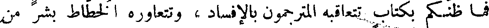
فما ظنكم بكتاب تتعاقبه المترجمون بالإفساد ، وتتعاوره الخطاط بشر من
File: 000111.gt.txt (if the image is defective, simply delete all Arabic text and the line will be excluded)

ذلك أو بمثله ، كتاب متقادم الميلاد ، دهري الصنعة !
File: 000112.gt.txt (if the image is defective, simply delete all Arabic text and the line will be excluded)

( بين أنصار الكتب وأنصار الشعر )
File: 000113.gt.txt (if the image is defective, simply delete all Arabic text and the line will be excluded)

قالوا : فكيف تكون هذه الكتب أنفع لأهلها من الشعر المقفى ؟
File: 000114.gt.txt (if the image is defective, simply delete all Arabic text and the line will be excluded)

قال الآخر : إذا كان الأمر على ما قلتم ، والشأن على مانزلتم ، أليس
File: 000115.gt.txt (if the image is defective, simply delete all Arabic text and the line will be excluded)

وشكل هديره وسرعة طيرانه ، وبطل عنه عمر الورشان ، وقوة جناحه
File: 000116.gt.txt (if the image is defective, simply delete all Arabic text and the line will be excluded)

وشدة عصبه ، وحسن صوته ، وشحو(1) حلقه ، وشكل لحونه ، وشدة
File: 000117.gt.txt (if the image is defective, simply delete all Arabic text and the line will be excluded)

إطرابه ، واحتماله لوقع البنادق وجرح المخالب . وفي الراعبى أنه مسرول
File: 000118.gt.txt (if the image is defective, simply delete all Arabic text and the line will be excluded)

مثقل ، وحدث له عظم بدن ، وثقل وزن لم يكن لأبيه ولا لأمه .
File: 000119.gt.txt (if the image is defective, simply delete all Arabic text and the line will be excluded)

وكذلك البغل ، خرج من بين حيوانين يلدان حيوانا مثلهما ، ويعيش
File: 000120.gt.txt (if the image is defective, simply delete all Arabic text and the line will be excluded)

نتاجهما ويبقى بقاءهما ، وهو لا يعيش له ولد وليس بعقيم ، ولا يبقى للبغلة
File: 000121.gt.txt (if the image is defective, simply delete all Arabic text and the line will be excluded)
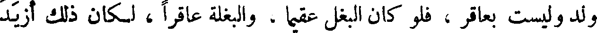
ولد وليست بعاقر ، فلو كان البغل عقيما ، والبغلة عاقرا ، لكان ذلك أزيد
File: 000122.gt.txt (if the image is defective, simply delete all Arabic text and the line will be excluded)

في قوتهما ، وأتم لشدتهما ؛ فمع البغل من الشبق والنعظ ما ليس مع أبيه ،
File: 000123.gt.txt (if the image is defective, simply delete all Arabic text and the line will be excluded)

ومع البغلة من السوس(2)، وطلب السفاد، ما ليس مع أمها . وذلك كله قدح
File: 000124.gt.txt (if the image is defective, simply delete all Arabic text and the line will be excluded)

في القوة ، ونقص في البنية(3) . وخرج غرموله أعظم من غراميل أعمامه
File: 000125.gt.txt (if the image is defective, simply delete all Arabic text and the line will be excluded)

وأخواله ، فترك شبههما ، ونزع إلى شيء ليس له في الأرض أصل ، وخرج
File: 000126.gt.txt (if the image is defective, simply delete all Arabic text and the line will be excluded)

أطول عمرا من أبويه ، وأصبر على الأثقال من أبويه .
File: 000127.gt.txt (if the image is defective, simply delete all Arabic text and the line will be excluded)
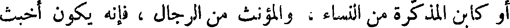
أو كابن المذكرة من النساء ، والمؤنث من الرجال ، فإنه يكون أخبث
File: 000128.gt.txt (if the image is defective, simply delete all Arabic text and the line will be excluded)

نتاجا من البغل ، وأفسد أعراقا من السمع ، وأكثر عيوبا من العسبار ،
File: 000129.gt.txt (if the image is defective, simply delete all Arabic text and the line will be excluded)

ومن كل خلق خلق إذا تركب من ضد ، ومن كل شجرة مطعمة بخلاف .
File: 000130.gt.txt (if the image is defective, simply delete all Arabic text and the line will be excluded)

وليس يعتري مثل ذلك الخلاسي من الدجاج ، ولا الورداني(4)
File: 000131.gt.txt (if the image is defective, simply delete all Arabic text and the line will be excluded)

من الحمام .
File: 000132.gt.txt (if the image is defective, simply delete all Arabic text and the line will be excluded)

ودقائق اختصاراته ، وخفيات حدوده ، ولا يقدر أن يوفيها حقوقها ،
File: 000133.gt.txt (if the image is defective, simply delete all Arabic text and the line will be excluded)

ويؤدي الأمانة فيها ، ويقوم بما يلزم الوكيل ويجب على الجري(1) ،
File: 000134.gt.txt (if the image is defective, simply delete all Arabic text and the line will be excluded)

وكيف يقدر على أدائها وتسليم معانيها ، والإخبار عنها على حقها وصدقها ،
File: 000135.gt.txt (if the image is defective, simply delete all Arabic text and the line will be excluded)
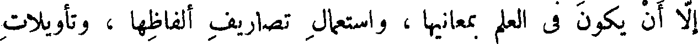
إلا أن يكون في العلم بمعانيها ، واستعمال تصاريف ألفاظها ، وتأويلات
File: 000136.gt.txt (if the image is defective, simply delete all Arabic text and the line will be excluded)

مخارجها ، مثل مؤلف الكتاب وواضعه . فمتى كان رحمه الله تعالى
File: 000137.gt.txt (if the image is defective, simply delete all Arabic text and the line will be excluded)
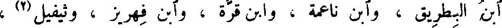
ابن البطريق ، وآبن ناعمة ، وابن قرة ، وآبن فهريز ، وثيفيل(4) ،
File: 000138.gt.txt (if the image is defective, simply delete all Arabic text and the line will be excluded)

وآبن وهيلي ، وآبن المقفع ، مثل أرسطاطاليس ؟ ! ومتى كان خالد(3)
File: 000139.gt.txt (if the image is defective, simply delete all Arabic text and the line will be excluded)

( شرائط الترجمان )
File: 000140.gt.txt (if the image is defective, simply delete all Arabic text and the line will be excluded)

مثل أفلاطون ؟ !
File: 000141.gt.txt (if the image is defective, simply delete all Arabic text and the line will be excluded)
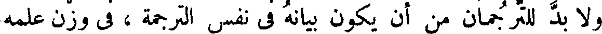
ولا بد للترجمان من أن يكون بيانه في نفس الترجمة ، في وزن علمه
File: 000142.gt.txt (if the image is defective, simply delete all Arabic text and the line will be excluded)

في نفس المعرفة ، وينبغي أن يكون أعلم الناس باللغة المنقولة والمنقول إليها ،
File: 000143.gt.txt (if the image is defective, simply delete all Arabic text and the line will be excluded)

حتى يكون فيهما سواء وغاية . ومتى وجدناه أيضا قد تكلم بلسانين ، علمنا
File: 000144.gt.txt (if the image is defective, simply delete all Arabic text and the line will be excluded)

أنه قد أدخل الضيم عليهما ؛ لأن كل واحدة من اللغتين تجذب الأخرى
File: 000145.gt.txt (if the image is defective, simply delete all Arabic text and the line will be excluded)

وتأخذ منها ، وتعترض عليها . وكيف يكون تمكن اللسان منهما مجتمعين
File: 000146.gt.txt (if the image is defective, simply delete all Arabic text and the line will be excluded)
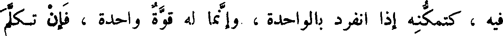
فيه ، كتمكنه إذا انفرد بالواحدة ، وإنما له قوة واحدة ، فإن تكلم
File: 000147.gt.txt (if the image is defective, simply delete all Arabic text and the line will be excluded)

والكناية ، وفصل ما بين الخطل والهذر ، والمقصور والمبسوط والاختصار ؛
File: 000148.gt.txt (if the image is defective, simply delete all Arabic text and the line will be excluded)

وحتى يعرف أبنية الكلام ، وعادات القوم ، وأسباب تفاهمهم،والذي ذكرنا
File: 000149.gt.txt (if the image is defective, simply delete all Arabic text and the line will be excluded)

قليل من كثير . ومتى لم يعرف ذلك المترجم أخطأ في تأويل كلام الدين .
File: 000150.gt.txt (if the image is defective, simply delete all Arabic text and the line will be excluded)

والخطأ في الدين أضر من الخطأ في الرياضة والصناعة ، والفلسفة والكيمياء ،
File: 000151.gt.txt (if the image is defective, simply delete all Arabic text and the line will be excluded)

وفي بعض المعيشة التي يعيش بها بنو آدم .
File: 000152.gt.txt (if the image is defective, simply delete all Arabic text and the line will be excluded)

وإذا كان المترجم الذي قد ترجم لا يكمل لذلك ، أخطأ على قدر
File: 000153.gt.txt (if the image is defective, simply delete all Arabic text and the line will be excluded)

نقصانه من الكمال . وما علم المترجم بالدليل عن شبه الدليل ؟ وما علمه
File: 000154.gt.txt (if the image is defective, simply delete all Arabic text and the line will be excluded)

بالأخبار النجومية ؟ وما علمه بالحدود الخفية ؟ وما علمه بإصلاح سقطات
File: 000155.gt.txt (if the image is defective, simply delete all Arabic text and the line will be excluded)

الكلام ، وأسقاط الناسخين للكتب ؟ وما علمه ببعض الخطرفة لبعض
File: 000156.gt.txt (if the image is defective, simply delete all Arabic text and the line will be excluded)

المقدمات ؟ وقد علمنا أن المقدمات لا بد أن تكون اضطرارية ، ولا بد أن
File: 000157.gt.txt (if the image is defective, simply delete all Arabic text and the line will be excluded)

تكون مرتبة ، وكالخيط الممدود(1) . وابن البطريق وابن قرة(2)لا يفهمان
File: 000158.gt.txt (if the image is defective, simply delete all Arabic text and the line will be excluded)

هذا موصوفا منزلا، ومرتبا مفصلا ، من معلم رفيق ، ومن حاذق طب ؛
File: 000159.gt.txt (if the image is defective, simply delete all Arabic text and the line will be excluded)

40 فكيف بكتاب قد تداولته اللغات واختلاف الأقلام ، وأجناس
File: 000160.gt.txt (if the image is defective, simply delete all Arabic text and the line will be excluded)

خطوط الملل والأمم ؟ !
File: 000161.gt.txt (if the image is defective, simply delete all Arabic text and the line will be excluded)

ولو كان الحاذق بلسان اليونانيين يرمي إلى الحاذق بلسان العربية ،
File: 000162.gt.txt (if the image is defective, simply delete all Arabic text and the line will be excluded)

ثم كان العربي مقصرا عن مقدار بلاغة اليوناني ، لم يجد المعنى والناقل
File: 000163.gt.txt (if the image is defective, simply delete all Arabic text and the line will be excluded)

التقصير ، ولم يجد اليوناني الذي لم يرض بمقدار بلاغته في لسان العربية
File: 000164.gt.txt (if the image is defective, simply delete all Arabic text and the line will be excluded)

بدا من الاغتفار والتجاوز ، ثم يصير إلى ما يعرض من الآفات لأصناف
File: 000165.gt.txt (if the image is defective, simply delete all Arabic text and the line will be excluded)

الناسخين ؛ وذلك أن نسخته لا يعدمها الخطأ ، ثم ينسخ له من تلك النسخة
File: 000166.gt.txt (if the image is defective, simply delete all Arabic text and the line will be excluded)

ولم يكن ذلك في أبويه ؛ وخرج مثقلا سيء الهداية . وللو رشان هداية ،
File: 000167.gt.txt (if the image is defective, simply delete all Arabic text and the line will be excluded)

وإن كان دون الحمام ؛ وجاء أعظم جثة من أبويه ؛ ومقدار النفس من
File: 000168.gt.txt (if the image is defective, simply delete all Arabic text and the line will be excluded)

ابتداء هديله إلى منقطعه ؛ أضعاف مقدار هديل أبويه .
File: 000169.gt.txt (if the image is defective, simply delete all Arabic text and the line will be excluded)

وفوالج البخت إذا ضربت في إناث البخت ؛ ولم يخرج الحوار
File: 000170.gt.txt (if the image is defective, simply delete all Arabic text and the line will be excluded)

إلا أدن(1) قصير العنق ؛ لا ينال كلأ ولا ماء إلا بأن يرفعا إليه ؛ فيصير
File: 000171.gt.txt (if the image is defective, simply delete all Arabic text and the line will be excluded)

- لمكان نقصان خلقه - جزور لحم ؛ ولا يكون من اليعملات ولا من
File: 000172.gt.txt (if the image is defective, simply delete all Arabic text and the line will be excluded)

السابقة ؛ ولو عالوه وكفوه مؤنة تكلف(2) المأكول والمشروب ، ثم بلغ
File: 000173.gt.txt (if the image is defective, simply delete all Arabic text and the line will be excluded)

إلى أن يصير جملا يمكنه الضراب . وكذلك [ الأنثى التي هي ] الحائل إلى
File: 000174.gt.txt (if the image is defective, simply delete all Arabic text and the line will be excluded)

أن تصير ناقة ؛ فلو ألقحها الفحل لجاء ولدها أقصر عنقا من الفيل ، الذي
File: 000175.gt.txt (if the image is defective, simply delete all Arabic text and the line will be excluded)

لو لم يجعل الله تعالى له خرطوما يتناول به طعامه وشرابه ، لمات جوعا
File: 000176.gt.txt (if the image is defective, simply delete all Arabic text and the line will be excluded)

وهزالا ؛ وليس كذلك العراب . وإذا ضربت الفوالج في العراب جاءت
File: 000177.gt.txt (if the image is defective, simply delete all Arabic text and the line will be excluded)

هذه الجوامز(3) والبخت الكريمة التي تجمع عامة خصال العراب وخصال
File: 000178.gt.txt (if the image is defective, simply delete all Arabic text and the line will be excluded)

البخت ؛ فيكون ما يخرج التركيب من هذين الجنسين أكرم وأفخم
File: 000179.gt.txt (if the image is defective, simply delete all Arabic text and the line will be excluded)

وأنفس وأثمن . ومتى ضربت فحول العراب في إناث البخت جاءت هذه
File: 000180.gt.txt (if the image is defective, simply delete all Arabic text and the line will be excluded)

الإبل البهونية(4) [ والصرصرانية(٥) ] فتخرج أقبح منظرا من أبويها ،
File: 000181.gt.txt (if the image is defective, simply delete all Arabic text and the line will be excluded)

وأشد أسرا من أبويها . [ وقال الراجز : ولا بهوني من الأباعر ]
File: 000182.gt.txt (if the image is defective, simply delete all Arabic text and the line will be excluded)

وخلاصته ، لا يحتاج فيه إلى مجزز المدلجي(1) ، ولا إلى آبن كريز
File: 000183.gt.txt (if the image is defective, simply delete all Arabic text and the line will be excluded)

( خصاء الروم )
File: 000184.gt.txt (if the image is defective, simply delete all Arabic text and the line will be excluded)

الخزاعي .
File: 000185.gt.txt (if the image is defective, simply delete all Arabic text and the line will be excluded)

ومن أهل الملل من يخصي ابنه ويقفه على بيت العبادة، ويجعله سادنا ،
File: 000186.gt.txt (if the image is defective, simply delete all Arabic text and the line will be excluded)

كصنيع الروم ، إلا أنهم لا يحدثون في القضيب حدثا ، ولا يتعرضون
File: 000187.gt.txt (if the image is defective, simply delete all Arabic text and the line will be excluded)

إلا للأنثيين ، كأنهم إنما كرهوا لأولادهم إحبال نسائهم ورواهبهم
File: 000188.gt.txt (if the image is defective, simply delete all Arabic text and the line will be excluded)

فقط ! ! فأما قضاء الوطر وبلوغ اللذة ، فقد زعموا أنهم يبلغون من ذلك
File: 000189.gt.txt (if the image is defective, simply delete all Arabic text and the line will be excluded)

مبلغا لا يبلغه الفحل ، كأنهم يزعمون أنه يستقصي جميع ما عندها ويستجلبه ،
File: 000190.gt.txt (if the image is defective, simply delete all Arabic text and the line will be excluded)

لفرط قوته على المطاولة .
File: 000191.gt.txt (if the image is defective, simply delete all Arabic text and the line will be excluded)

وكل خصاء في الدنيا فإنما أصله من قبل الروم ، ومن العجب
File: 000192.gt.txt (if the image is defective, simply delete all Arabic text and the line will be excluded)

أنهم نصارى ، وهم يدعون من الرأفة والرحمة ، ورقة القلب والكبد ،
File: 000193.gt.txt (if the image is defective, simply delete all Arabic text and the line will be excluded)

ما لايدعيه أحد من جميع الأصناف ، وحسبك بالخصاء مثلة ! وحسبك
File: 000194.gt.txt (if the image is defective, simply delete all Arabic text and the line will be excluded)

بصنيع الخاصي قسوة ! ولا جرم أنهم بعثوا على أنفسهم من الخصيان ، من
File: 000195.gt.txt (if the image is defective, simply delete all Arabic text and the line will be excluded)

طلب الطوائل وتذكر الأحقاد ، مالم يظنوه عندهم ، ولا خافوه من قبلهم ،
File: 000196.gt.txt (if the image is defective, simply delete all Arabic text and the line will be excluded)

وهبت ريح العلماء ، وكسد العي والجهل ، وقامت سوق البيان والعلم ؟ !
File: 000197.gt.txt (if the image is defective, simply delete all Arabic text and the line will be excluded)

وليس يجد الإنسان في كل حين إنسانا يدربه ، ومقوما يثقفه .
File: 000198.gt.txt (if the image is defective, simply delete all Arabic text and the line will be excluded)

والصبر على إفهام الريض شديد ، وصرف النفس عن مغالبة العالم أشد
File: 000199.gt.txt (if the image is defective, simply delete all Arabic text and the line will be excluded)

منه ، والمتعلم يجد في كل مكان الكتاب عتيدا ، وبما يحتاج إليه قائما
File: 000200.gt.txt (if the image is defective, simply delete all Arabic text and the line will be excluded)
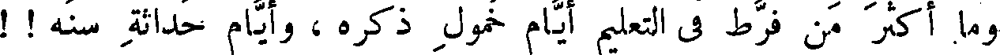
وما أكثر من فرط في التعليم أيام خمول ذكره ، وأيام حداثة سنه ! !
File: 000201.gt.txt (if the image is defective, simply delete all Arabic text and the line will be excluded)

ولولا جياد الكتب وحسنها ، ومبينها ومختصرها، لما تحركت همم هؤلاء
File: 000202.gt.txt (if the image is defective, simply delete all Arabic text and the line will be excluded)

لطلب العلم ، ونزعت إلى حب الأدب ، وأنفت من حال الجهل ، وأن
File: 000203.gt.txt (if the image is defective, simply delete all Arabic text and the line will be excluded)

ولذلك قال عمر رضي الله تعالى عنه : « تفقهوا قبل أن تسودوا » .
File: 000204.gt.txt (if the image is defective, simply delete all Arabic text and the line will be excluded)

( كتب أبي حنيفة )
File: 000205.gt.txt (if the image is defective, simply delete all Arabic text and the line will be excluded)

وقد تجد الرجل يطلب الآثار وتأويل القرآن ، ويجالس الفقهاء خمسين
File: 000206.gt.txt (if the image is defective, simply delete all Arabic text and the line will be excluded)

عاما ، وهو لا يعد فقيها ، ولا يجعل قاضيا ، فما هو إلا أن ينظر في كتب
File: 000207.gt.txt (if the image is defective, simply delete all Arabic text and the line will be excluded)

أبي حنيفة ، وأشباه أبي حنيفة ، ويحفظ كتب الشروط في مقدار سنة
File: 000208.gt.txt (if the image is defective, simply delete all Arabic text and the line will be excluded)
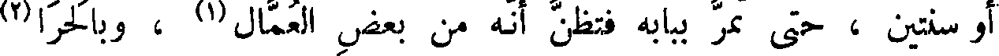
أو سنتين ، حتى تمر ببابه فتظن أنه من بعض العمال(1) ، وبالحرا(2)
File: 000209.gt.txt (if the image is defective, simply delete all Arabic text and the line will be excluded)

ألا يمر عليه من الأيام إلا اليسير ، حتى يصير حاكما على مصر من الأمصار،
File: 000210.gt.txt (if the image is defective, simply delete all Arabic text and the line will be excluded)
أو بلد من البلدان.
File: 000211.gt.txt (if the image is defective, simply delete all Arabic text and the line will be excluded)

وبين الذيخ وهو ذكر الضباع ؛ وذلك أنهم لما رأوا أن اسمها(1) بالفارسية
File: 000212.gt.txt (if the image is defective, simply delete all Arabic text and the line will be excluded)
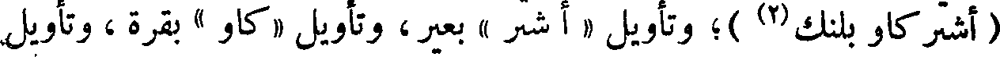
( أشتر كاو بلنك(2) )؛ وتأويل «أشتر» بعير ، وتأويل «كاو» بقرة ، وتأويل
File: 000214.gt.txt (if the image is defective, simply delete all Arabic text and the line will be excluded)
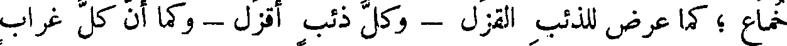
خماع ؛ كما عرض للذئب القزل - وكل ذئب أقزل - وكما أن كل غراب
File: 000215.gt.txt (if the image is defective, simply delete all Arabic text and the line will be excluded)

يحجل كما يحجل المقيد من الناس ؛ وكما أن العصفور لا يمشي ؛ ومشيه أن
File: 000216.gt.txt (if the image is defective, simply delete all Arabic text and the line will be excluded)

يجمع رجليه أبدا معا في كل حركة وسكون . وقولهم للزرافة أشتر كاو بلنك(3)
File: 000217.gt.txt (if the image is defective, simply delete all Arabic text and the line will be excluded)

اسم فارسي ؛ والفرس تسمي الأشياء بالاشتقاقات ؛ كما تقول للنعامة :
File: 000218.gt.txt (if the image is defective, simply delete all Arabic text and the line will be excluded)

اشتر مرغ ؛ وكأنهم في التقدير قالوا : هو طائر وجمل ؛ فلم نجد هذا الاسم
File: 000219.gt.txt (if the image is defective, simply delete all Arabic text and the line will be excluded)

أوجب أن تكون النعامة نتاج ما بين الإبل والطير ؛ ولكن القوم لما
File: 000220.gt.txt (if the image is defective, simply delete all Arabic text and the line will be excluded)

شبهوها بشيئين متقاربين ؛ سموها بذينك الشيئين . وهم يسمون الشيء
File: 000221.gt.txt (if the image is defective, simply delete all Arabic text and the line will be excluded)

المر الحلو « ترش شيرين » وهو في التفسير حلو حامض . فجسر القوم فوضعوا
File: 000222.gt.txt (if the image is defective, simply delete all Arabic text and the line will be excluded)

لتفسير اسم الزرافة حديثا(4) ؛ وجعلوا الخلقة ضربا من التراكيب ؛ فقالوا:
File: 000223.gt.txt (if the image is defective, simply delete all Arabic text and the line will be excluded)

قد يعرض الذيخ في تلك البلاد للناقة الوحشية فيسفدها ، فتلقح بولد يجيء
File: 000224.gt.txt (if the image is defective, simply delete all Arabic text and the line will be excluded)
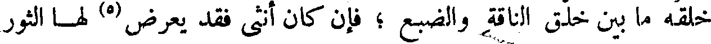
خلقه ما بين خلق الناقة والضبع ؛ فإن كان أنثى فقد يعرض(5) لها الثور
File: 000225.gt.txt (if the image is defective, simply delete all Arabic text and the line will be excluded)

الوحشي فيضربها ؛ فيصير الولد زرافة ؛ وإن كان ولد الناقة ذكرا عرض
File: 000227.gt.txt (if the image is defective, simply delete all Arabic text and the line will be excluded)

تلقح من الزرافة الذكر ؛ وزعموا أن كل زرافة في الأرض ، فإنما(6) هي
File: 000228.gt.txt (if the image is defective, simply delete all Arabic text and the line will be excluded)

لا تورثوا الابن من المال ، إلا ما يكون عونا له على طلب المال ، واغذوه
File: 000229.gt.txt (if the image is defective, simply delete all Arabic text and the line will be excluded)

بحلاوة العلم ، واطبعوه على تعظيم الحكمة ، ليصير جمع العلم أغلب عليه من
File: 000230.gt.txt (if the image is defective, simply delete all Arabic text and the line will be excluded)

جمع المال ، وليرى أنه العدة والعتاد ، وأنه أكرم مستفاد .
File: 000231.gt.txt (if the image is defective, simply delete all Arabic text and the line will be excluded)

وكانوا يقولون : لا تورثوا الابن من المال إلا ما يسد الخلة ، ويكون له
File: 000232.gt.txt (if the image is defective, simply delete all Arabic text and the line will be excluded)

عونا على درك الفضول ، إن كان لا بد من الفضول ؛ فإنه إن كان فاسدا
File: 000233.gt.txt (if the image is defective, simply delete all Arabic text and the line will be excluded)
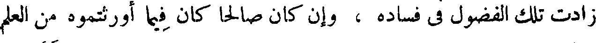
زادت تلك الفضول في فساده ، وإن كان صالحا كان فيما أورثتموه من العلم
File: 000234.gt.txt (if the image is defective, simply delete all Arabic text and the line will be excluded)

وبقيتم له من الكفاية، مايكسبه الحال ، فإن الحال أفضل من المال،ولأن المال
File: 000235.gt.txt (if the image is defective, simply delete all Arabic text and the line will be excluded)

لم يزل تابعا للحال ، وقد لا يتبع الحال المال . وصاحب الفضول بعرض
File: 000236.gt.txt (if the image is defective, simply delete all Arabic text and the line will be excluded)

فساد ، وعلى شفا إضاعة ، مع تمام الحنكة ، واجتماع القوة ، فما ظنكم بها مع
File: 000237.gt.txt (if the image is defective, simply delete all Arabic text and the line will be excluded)

غرارة(١) الحداثة ، وسوء الاعتبار ، وقلة التجربة .
File: 000238.gt.txt (if the image is defective, simply delete all Arabic text and the line will be excluded)

وكانوا يقولون : خير ميراث ما أكسبك الأركان الأربعة ، وأحاط
File: 000239.gt.txt (if the image is defective, simply delete all Arabic text and the line will be excluded)

بأصول المنفعة ، وعجل لك حلاوة المحبة ، وبقى لك الأحدوثة الحسنة ،
File: 000240.gt.txt (if the image is defective, simply delete all Arabic text and the line will be excluded)

وأعطاك عاجل الخير وآجله ، وظاهره وباطنه .
File: 000241.gt.txt (if the image is defective, simply delete all Arabic text and the line will be excluded)
وليس يجمع ذلك إلا كرام الكتب النفيسة ، المشتملة على ينابيع
File: 000242.gt.txt (if the image is defective, simply delete all Arabic text and the line will be excluded)

العلم ، والجامعة لكنوز الأدب ، ومعرفة الصناعات ، وفوائد الأرفاق ،
File: 000243.gt.txt (if the image is defective, simply delete all Arabic text and the line will be excluded)

وحجج الدين الذي بصحته ، وعند وضوح برهانه ، تسكن النفوس ، وتثلج
File: 000244.gt.txt (if the image is defective, simply delete all Arabic text and the line will be excluded)
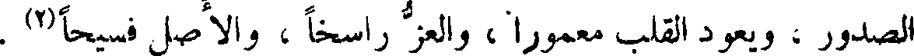
الصدور ، ويعود القلب معمورا ، والعز راسخا ، والأصل فسيحا(2) .
File: 000245.gt.txt (if the image is defective, simply delete all Arabic text and the line will be excluded)

وهذه الكتب هي التي تزيد في العقل وتشحذه ، وتداويه وتصلحه ،
File: 000246.gt.txt (if the image is defective, simply delete all Arabic text and the line will be excluded)

وتهذبه ، وتنفي الخبث عنه ، وتفيدك العلم ، وتصادق بينك وبين الحجة ،
File: 000247.gt.txt (if the image is defective, simply delete all Arabic text and the line will be excluded)

وتعودك الأخذ بالثقة ، وتجلب الحال ، وتكسب المال .
File: 000248.gt.txt (if the image is defective, simply delete all Arabic text and the line will be excluded)

وحسبك ما في أيدي الناس من كتب الحساب ، والطب ، والمنطق ،
File: 000249.gt.txt (if the image is defective, simply delete all Arabic text and the line will be excluded)

والهندسة ، ومعرفة اللحون ، والفلاحة ، والتجارة ، وآبواب الأصباغ ،
File: 000250.gt.txt (if the image is defective, simply delete all Arabic text and the line will be excluded)
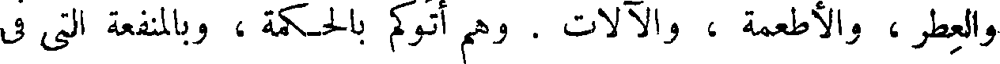
والعطر ، والأطعمة ، والآلات . وهم أتوكم بالحكمة ، وبالمنفعة التي في
File: 000251.gt.txt (if the image is defective, simply delete all Arabic text and the line will be excluded)

الحمامات وفي الأصطرلابات ، والقرسطونات(1) وآلات معرفة الساعات ،
File: 000252.gt.txt (if the image is defective, simply delete all Arabic text and the line will be excluded)

وصنعة الزجاج والفسيفساء(2) ، والأسرنج(3) والزنجفور(4) واللازورد
File: 000253.gt.txt (if the image is defective, simply delete all Arabic text and the line will be excluded)

والأشربة ، والأنبجات(6) ، والأيارجات(7) ولكم المينا ، النشادر
File: 000254.gt.txt (if the image is defective, simply delete all Arabic text and the line will be excluded)

( تخليد العرب لمآثرها )
File: 000255.gt.txt (if the image is defective, simply delete all Arabic text and the line will be excluded)

وكانت العرب في جاهليتها تحتال في تخليدها، بأن تعتمد في ذلك على
File: 000256.gt.txt (if the image is defective, simply delete all Arabic text and the line will be excluded)

الشعر الموزون ، والكلام المقفى ، وكان ذلك هو ديوانها . وعلى أن الشعر
File: 000257.gt.txt (if the image is defective, simply delete all Arabic text and the line will be excluded)

يفيد فضيلة البيان ، على الشاعر الراغب ، والمادح ، وفضيلة المأثرة ، على
File: 000258.gt.txt (if the image is defective, simply delete all Arabic text and the line will be excluded)

السيد المرغوب إليه ، والممدوح به . وذهبت العجم على أن تقيد مآثرها
File: 000259.gt.txt (if the image is defective, simply delete all Arabic text and the line will be excluded)

بالبنيان ، فبنوا مثل كرد بيداد(1) ، وبنى أردشير بيضاء إصطخر ،
File: 000260.gt.txt (if the image is defective, simply delete all Arabic text and the line will be excluded)

وبيضاء المدائن ، والحضر ، والمدن والحصون، والقناطر والجسور ،
File: 000261.gt.txt (if the image is defective, simply delete all Arabic text and the line will be excluded)

والنواويس . قال : ثم إن العرب أحبت أن تشارك العجم في البناء ،
File: 000262.gt.txt (if the image is defective, simply delete all Arabic text and the line will be excluded)

وتنفرد بالشعر ، فبنوا غمدان ، وكعبة نجران(2) ، وقصر مارد ، وقصر
File: 000263.gt.txt (if the image is defective, simply delete all Arabic text and the line will be excluded)

مأرب، وقصر شعوب(3) والأبلق الفرد؛ و [فيه وفي (4)] مارد ، قالوا
File: 000264.gt.txt (if the image is defective, simply delete all Arabic text and the line will be excluded)

« تمرد ما رد وعز الأبلق » وغير ذلك من البنيان . قال : ولذلك لم تكن
File: 000265.gt.txt (if the image is defective, simply delete all Arabic text and the line will be excluded)

الفرس تبيح شريف البنيان ، كما لا تبيح شريف الأسماء ، إلا لأهل
File: 000266.gt.txt (if the image is defective, simply delete all Arabic text and the line will be excluded)

38 على حيطان الدار ، وكالعقد على الدهليز وما أشبه ذلك ، فقال بعض من
File: 000267.gt.txt (if the image is defective, simply delete all Arabic text and the line will be excluded)

( السماع والكتابة )
File: 000268.gt.txt (if the image is defective, simply delete all Arabic text and the line will be excluded)

فالإنسان لا يعلم حتى يكثر سماعه ، ولا بد من أن تكون كتبه أكثر من
File: 000269.gt.txt (if the image is defective, simply delete all Arabic text and the line will be excluded)

سماعه ؛ ولا يعلم ، ولا يجمع العلم ،ولا يختلف [إليه](1) ،حتى يكون الإنفاق
File: 000270.gt.txt (if the image is defective, simply delete all Arabic text and the line will be excluded)

عليه من ماله ، ألذ عنده من الإنفاق من مال عدوه . ومن لم تكن نفقته التي
File: 000271.gt.txt (if the image is defective, simply delete all Arabic text and the line will be excluded)

تخرج في الكتب، ألذ عنده من إنفاق عشاق القيان ، والمستهترين بالبنيان(2) ،
File: 000272.gt.txt (if the image is defective, simply delete all Arabic text and the line will be excluded)

لم يبلغ في العلم مبلغا رضيا . وليس ينتفع بإنفاقه ، حتى يؤثر اتخاذ الكتب
File: 000273.gt.txt (if the image is defective, simply delete all Arabic text and the line will be excluded)

إيثار الأعرابي فرسه باللبن على عياله ، وحتى يؤمل في العلم ما يؤمل الأعرابي
File: 000274.gt.txt (if the image is defective, simply delete all Arabic text and the line will be excluded)

( مغالاة الزنادقة على تحسين كتبهم )
File: 000275.gt.txt (if the image is defective, simply delete all Arabic text and the line will be excluded)

في فرسه .
File: 000276.gt.txt (if the image is defective, simply delete all Arabic text and the line will be excluded)

وقال إبراهيم بن السندي مرة : وددت أن الزنادقة لم يكونوا حرصاء على
File: 000277.gt.txt (if the image is defective, simply delete all Arabic text and the line will be excluded)

المغالاة بالورق النقي الأبيض، وعلى تخير الحبر الأسود المشرق البراق ،
File: 000278.gt.txt (if the image is defective, simply delete all Arabic text and the line will be excluded)

وعلى استجادة الحط والإرغاب لمن يخط ، فإني لم أر كورق كتبهم ورقا ،
File: 000279.gt.txt (if the image is defective, simply delete all Arabic text and the line will be excluded)

ولا كالخطوط التي فيها خطا. وإذا غرمت مالا عظيما- مع حبي للمال وبغض
File: 000280.gt.txt (if the image is defective, simply delete all Arabic text and the line will be excluded)

الغرم - كان سخاء النفس بالإنفاق على الكتب ، دليلا على تعظيم العلم ،
File: 000281.gt.txt (if the image is defective, simply delete all Arabic text and the line will be excluded)

فما أكثر من يعزم على خمسة أسواط فيضرب مائة ؟ ! لأنه ابتدأ الضرب
File: 000282.gt.txt (if the image is defective, simply delete all Arabic text and the line will be excluded)

وهو ساكن الطباع ، فأراه السكون أن الصواب في الإقلال ، فلما ضرب
File: 000283.gt.txt (if the image is defective, simply delete all Arabic text and the line will be excluded)

تحرك دمه ، فأشاع فيه الحرارة فزاد في غضبه ، فأراه الغضب أن الرأي
File: 000284.gt.txt (if the image is defective, simply delete all Arabic text and the line will be excluded)

في الإكثار . وكذلك صاحب القلم ؛ فما أكثر من يبتدئ الكتاب وهو
File: 000285.gt.txt (if the image is defective, simply delete all Arabic text and the line will be excluded)

يريد مقدار سطرين ، فيكتب عشرة ! والحفظ مع الإقلال أمكن ،
File: 000286.gt.txt (if the image is defective, simply delete all Arabic text and the line will be excluded)

وهو مع الإكثار أبعد .
File: 000287.gt.txt (if the image is defective, simply delete all Arabic text and the line will be excluded)

( مفاضلة بين الولد والكتاب )
File: 000288.gt.txt (if the image is defective, simply delete all Arabic text and the line will be excluded)

واعلم أن العاقل إن لم يكن بالمتتبع ، فكثيرا ما يعتريه من
File: 000289.gt.txt (if the image is defective, simply delete all Arabic text and the line will be excluded)

ولده ، أن يحسن في عينه منه المقبح في عين غيره ، فليعلم أن لفظه أقرب
File: 000290.gt.txt (if the image is defective, simply delete all Arabic text and the line will be excluded)

نسبا منه من ابنه ، وحركته أمس به رحما من ولده ؛ لأن حركته شيء
File: 000291.gt.txt (if the image is defective, simply delete all Arabic text and the line will be excluded)

أحدثه من نفسه وبذاته ، ومن عين جوهره فصلت(1) ، ومن نفسه
File: 000292.gt.txt (if the image is defective, simply delete all Arabic text and the line will be excluded)

كانت ؛ وإنما الولد كالمخطة يتمخطها ، والنخامة يقذفها ، ولا سواء
File: 000293.gt.txt (if the image is defective, simply delete all Arabic text and the line will be excluded)

فوق فتنته بجميع نعمته .
File: 000294.gt.txt (if the image is defective, simply delete all Arabic text and the line will be excluded)

( ما ينبفى أن تكون عليه لغة الكتب )
File: 000295.gt.txt (if the image is defective, simply delete all Arabic text and the line will be excluded)

وليس الكتاب إلى شيء أحوج منه إلى إفهام معانيه ، حتى لا يحتاج
File: 000296.gt.txt (if the image is defective, simply delete all Arabic text and the line will be excluded)

وكما عرف المجنون لقبه ، والكلب اسمه . وعلى مثل ذلك فهم الصبي الزجر
File: 000297.gt.txt (if the image is defective, simply delete all Arabic text and the line will be excluded)

والإغراء ، ووعى المجنون الوعيد والتهدد(1) ، وبمثل ذلك اشتد حضر
File: 000298.gt.txt (if the image is defective, simply delete all Arabic text and the line will be excluded)

الدابة مع رفع الصوت ، حتى إذا رأى سائسه حمحم . وإذا رأى الحمام
File: 000299.gt.txt (if the image is defective, simply delete all Arabic text and the line will be excluded)

القيم عليه انحط للقط الحب ، قبل أن يلقي له مايلقطه . ولولا الوسوم
File: 000300.gt.txt (if the image is defective, simply delete all Arabic text and the line will be excluded)

ونقوش الخواتم ، لدخل على الأموال الخلل الكثير ، وعلى خزائن الناس
File: 000301.gt.txt (if the image is defective, simply delete all Arabic text and the line will be excluded)

الضرر الشديد .
File: 000302.gt.txt (if the image is defective, simply delete all Arabic text and the line will be excluded)

وليس في الأرض أمة بها طرق(3) أو لها مسكة ، ولا جيل لهم قبض
File: 000303.gt.txt (if the image is defective, simply delete all Arabic text and the line will be excluded)

وبسط ، إلا ولهم خط . فأما أصحاب الملك والمملكة ، والسلطان والجباية ،
File: 000304.gt.txt (if the image is defective, simply delete all Arabic text and the line will be excluded)

والديانة والعبادة ، فهناك الكتاب المتقن ، والحساب المحكم ، ولا يخرج
File: 000305.gt.txt (if the image is defective, simply delete all Arabic text and the line will be excluded)

الخط من الجزم والمسند المنمنم والسمون(4) كيف كان ، قال [ ذلك ] الهيثم
File: 000306.gt.txt (if the image is defective, simply delete all Arabic text and the line will be excluded)

[ ابن عدي ]، وآبن الكلبي .
File: 000307.gt.txt (if the image is defective, simply delete all Arabic text and the line will be excluded)

( تخليد الأمم لمآثرها )
File: 000308.gt.txt (if the image is defective, simply delete all Arabic text and the line will be excluded)

[ قال ] : فكل أمة تعتمد في استبقاء مآثرها ، وتحصين مناقبها ، على
File: 000309.gt.txt (if the image is defective, simply delete all Arabic text and the line will be excluded)

ضرب من الضروب ، وشكل من الأشكال .
File: 000310.gt.txt (if the image is defective, simply delete all Arabic text and the line will be excluded)

( ذوات اللحى والشوارب )
File: 000311.gt.txt (if the image is defective, simply delete all Arabic text and the line will be excluded)
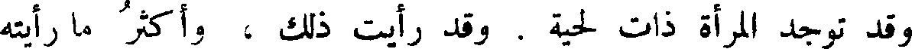
وقد توجد المرأة ذات لحية . وقد رأيت ذلك ، وأكثر ما رأيته
File: 000312.gt.txt (if the image is defective, simply delete all Arabic text and the line will be excluded)

في عجائز الدهاقين ، وكذلك الغبب والشارب ، وقد رأيت ذلك أيضا . وهي
File: 000313.gt.txt (if the image is defective, simply delete all Arabic text and the line will be excluded)

ليست في رأي العين بخنثى ، بل [ نجدها ] أنثى تامة ، إلا أن تكون لم
File: 000314.gt.txt (if the image is defective, simply delete all Arabic text and the line will be excluded)

تضرب في ذلك بالسبب الذي يقوى، حتى يظهر في غير ذلك المكان . [ ولا
File: 000315.gt.txt (if the image is defective, simply delete all Arabic text and the line will be excluded)

تعرض اللحى للنساء ، إلا عند ارتفاع الحيض ]، وليس يعرض ذلك للخصي .
File: 000316.gt.txt (if the image is defective, simply delete all Arabic text and the line will be excluded)

وقد ذكر أهل بغداد ، أنه كان لابنة من بنات محمد بن راشد
File: 000317.gt.txt (if the image is defective, simply delete all Arabic text and the line will be excluded)

الخناق ، لحية وافرة ، وأنها دخلت مع نساء متنقبات إلى بعض الأعراس
File: 000318.gt.txt (if the image is defective, simply delete all Arabic text and the line will be excluded)

لترى العرس وجلوة العروس ، ففطنت لها امرأة فصاحت : رجل والله !
File: 000319.gt.txt (if the image is defective, simply delete all Arabic text and the line will be excluded)

وأحال(1) الخدم والنساء عليها بالضرب ، فلم تكن لها حيلة إلا الكشف
File: 000320.gt.txt (if the image is defective, simply delete all Arabic text and the line will be excluded)
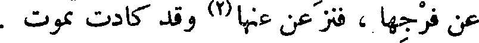
عن فرجها ، فنزعن عنها(2) وقد كادت تموت .
File: 000321.gt.txt (if the image is defective, simply delete all Arabic text and the line will be excluded)

ويفضل أيضا الخصى المرأة في الانجراد والزعر ، بأن تجد المرأة زباء
File: 000322.gt.txt (if the image is defective, simply delete all Arabic text and the line will be excluded)

الذراعين والساقين ، وتجد ركب(3) المرأة في الشعر كأنه عانة الرجل،
File: 000323.gt.txt (if the image is defective, simply delete all Arabic text and the line will be excluded)

ويعرض لها الشعر في إبطيها وغير ذلك .
File: 000324.gt.txt (if the image is defective, simply delete all Arabic text and the line will be excluded)

ولا يعرض للخصي ما يعرض للديك إذا خصي : أن يذبل غضروف
File: 000325.gt.txt (if the image is defective, simply delete all Arabic text and the line will be excluded)

عرفه ولحيته .
File: 000326.gt.txt (if the image is defective, simply delete all Arabic text and the line will be excluded)

والخصاء ينقص من شدة الأسر ، وينقض(4) مبرم القوى ، ويرخي
File: 000327.gt.txt (if the image is defective, simply delete all Arabic text and the line will be excluded)
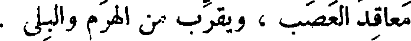
معاقد العصب ، ويقرب من الهرم والبلى .
File: 000328.gt.txt (if the image is defective, simply delete all Arabic text and the line will be excluded)

« خصاء أمتي الصوم ، والصوم وجاء » . فهذا خصاء الديانة .
File: 000329.gt.txt (if the image is defective, simply delete all Arabic text and the line will be excluded)

( خصاء الجلب ، قسوته )
File: 000330.gt.txt (if the image is defective, simply delete all Arabic text and the line will be excluded)

فأما من خصى الجلب(1) على جهة التجارة ، فإنه يجب القضيب ،
File: 000331.gt.txt (if the image is defective, simply delete all Arabic text and the line will be excluded)

ويمتلخ الأنثيين ، إلا إن تقلصت إحداهما من فرط الفزع (2) ، فتصير إلى
File: 000332.gt.txt (if the image is defective, simply delete all Arabic text and the line will be excluded)

موضع لا يمكن ردها إلا بعلاج طويل ، فللخاصي عند ذلك ظلم لا يفي به
File: 000333.gt.txt (if the image is defective, simply delete all Arabic text and the line will be excluded)

ظلم، وظلم يربي على كل ظلم(3) ، لأنه عند ذلك لا يحفل بفوت المتقلص (4) ،
File: 000334.gt.txt (if the image is defective, simply delete all Arabic text and the line will be excluded)

ويقطع ما ظهر له ؛ فإن برئ مجبوب القضيب أو ذا بيضة واحدة ، فقد تركه
File: 000335.gt.txt (if the image is defective, simply delete all Arabic text and the line will be excluded)

لا امرأة ولا رجلا ولا خصيا ، وهو حينئذ ممن تخرج لحيته ، وممن لا يدعه
File: 000336.gt.txt (if the image is defective, simply delete all Arabic text and the line will be excluded)
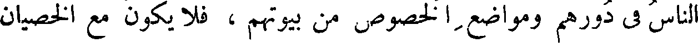
الناس في دورهم ومواضع الخصوص من بيوتهم ، فلا يكون مع الخصيان
File: 000337.gt.txt (if the image is defective, simply delete all Arabic text and the line will be excluded)

مقربا ومكرما ، وخصيب العيش منعما ، ولا هو إذا رمي به في الفحول ،
File: 000338.gt.txt (if the image is defective, simply delete all Arabic text and the line will be excluded)

كان له ما للفحول من لذة غشيان النساء ، ومن لذة النسل والتمتع بشم
File: 000339.gt.txt (if the image is defective, simply delete all Arabic text and the line will be excluded)

الأولاد ؛ فلم يزل عند الفحول مستضعفا محتقرا ، وعند الخصيان مجرحا
File: 000340.gt.txt (if the image is defective, simply delete all Arabic text and the line will be excluded)

مطرحا(5) ، فهو أسوأ حالا من السدم المعنى(6) فلا أعلم قتله - إذا كان
File: 000341.gt.txt (if the image is defective, simply delete all Arabic text and the line will be excluded)

تكون لصاحبه همة ، وأن يكون فيما وضع منفعة ، وأن يكون له نسبة
File: 000342.gt.txt (if the image is defective, simply delete all Arabic text and the line will be excluded)
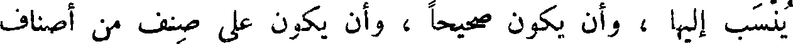
ينسب إليها ، وأن يكون صحيحا ، وأن يكون على صنف من أصناف
File: 000343.gt.txt (if the image is defective, simply delete all Arabic text and the line will be excluded)

الكتب معروفا به ، وأن يكون مؤتلفا من أجزاء خمسة ، وأن يكون مسندا
File: 000344.gt.txt (if the image is defective, simply delete all Arabic text and the line will be excluded)
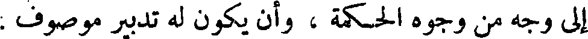
إلى وجه من وجوه الحكمة ، وأن يكون له تدبير موصوف .
File: 000345.gt.txt (if the image is defective, simply delete all Arabic text and the line will be excluded)

فذكر أن أبقراط قد جمع هذه الثمانية الأوجه في هذا الكتاب،
File: 000346.gt.txt (if the image is defective, simply delete all Arabic text and the line will be excluded)

وهو كتابه الذي يسمى ( أفوريسموا )، تفسيره كتاب الفصول.
File: 000347.gt.txt (if the image is defective, simply delete all Arabic text and the line will be excluded)

( مقاولة في شان الكلب )
File: 000348.gt.txt (if the image is defective, simply delete all Arabic text and the line will be excluded)

وقولك : وما بلغ من قدر الكلب مع لؤم أصله، وخبث طبعه،وسقوط
File: 000349.gt.txt (if the image is defective, simply delete all Arabic text and the line will be excluded)

قدره ، ومهانة نفسه ، ومع قلة خيره وكثرة شره ، واجتماع الأمم كلها على
File: 000350.gt.txt (if the image is defective, simply delete all Arabic text and the line will be excluded)

استسقاطه ، واستسفاله ، ومع ضربهم المثل في ذلك كله به ، ومع حاله التي
File: 000351.gt.txt (if the image is defective, simply delete all Arabic text and the line will be excluded)

يعرف بها ، ومن العجز عن صولة السباع واقتدارها، وعن(1) تمنعها وتشرفها،
File: 000352.gt.txt (if the image is defective, simply delete all Arabic text and the line will be excluded)

وتوحشها وقلة إسماحها ، وعن مسالمة البهائم وموادعتها ، والتمكين من
File: 000353.gt.txt (if the image is defective, simply delete all Arabic text and the line will be excluded)

إقامة مصلحتها والانتفاع بها ، إذ لم يكن في طبعها دفع السباع عن أنفسها ،
File: 000354.gt.txt (if the image is defective, simply delete all Arabic text and the line will be excluded)

ولا الاحتيال لمعاشها ، ولا المعرفة بالمواضع الحريزة من المواضع المخوفة ،
File: 000355.gt.txt (if the image is defective, simply delete all Arabic text and the line will be excluded)

ولأن الكلب ليس بسبع تام ، ولا بهيمة تامة ، حتى كأنه من الخلق المركب
File: 000356.gt.txt (if the image is defective, simply delete all Arabic text and the line will be excluded)

والطبائع الملفقة ، والأخلاط المجتلبة ، كالبغل المتلون في أخلاقه ، الكثير
File: 000357.gt.txt (if the image is defective, simply delete all Arabic text and the line will be excluded)

العيوب المتولدة عن مزاجه .
File: 000358.gt.txt (if the image is defective, simply delete all Arabic text and the line will be excluded)

وشر الطبائع ما تجاذبته الأعراق المتضادة ، والأخلاق المتفاوتة(2) ،
File: 000359.gt.txt (if the image is defective, simply delete all Arabic text and the line will be excluded)

والعناصر المتباعدة ، كالراعبي من الحمام، الذي ذهبت عنه هداية الحمام ،
File: 000360.gt.txt (if the image is defective, simply delete all Arabic text and the line will be excluded)

الخمارين(1) ، ونزائع الظؤورة ، وأشباه الخؤولة .
File: 000361.gt.txt (if the image is defective, simply delete all Arabic text and the line will be excluded)

وعلى شبيه بذلك قال سلم بن قتيبة(2) لبعض من ذكره ، وهو عند
File: 000362.gt.txt (if the image is defective, simply delete all Arabic text and the line will be excluded)
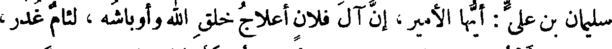
سليمان بن علي : أيها الأمير، إن آل فلان أعلاج خلق الله وأوباشه ، لئام غدر،
File: 000363.gt.txt (if the image is defective, simply delete all Arabic text and the line will be excluded)

شرابون بأنقع(3) ، ثم هذا بعد في نفسه ، نطفة خمار في رحم صناجة .
File: 000364.gt.txt (if the image is defective, simply delete all Arabic text and the line will be excluded)

( زواج الأجناس المتباينة من الناس )
File: 000365.gt.txt (if the image is defective, simply delete all Arabic text and the line will be excluded)

وقال لي أبو إسحاق : قال لي أبوالعباس - وأبو العباس هذا كان ختن
File: 000366.gt.txt (if the image is defective, simply delete all Arabic text and the line will be excluded)

إبراهيم على أخته ، وكان رجلا يدين بالنجوم ، ولا يقر بشيء من الحوادث
File: 000367.gt.txt (if the image is defective, simply delete all Arabic text and the line will be excluded)

إلا بما يجري على الطباع . قال أبو إسحاق : وقال لي مرة : أتعرف موضع
File: 000368.gt.txt (if the image is defective, simply delete all Arabic text and the line will be excluded)
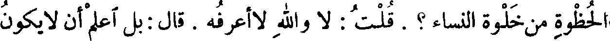
الحظوة من خلوة النساء؟ . قلت : لا والله لاأعرفه . قال : بل اعلم أن لا يكون
File: 000369.gt.txt (if the image is defective, simply delete all Arabic text and the line will be excluded)

الحظ إلا في نتاج شكلين متباينين ، فالتقاؤهما هو الأكسير المؤدي إلى
File: 000370.gt.txt (if the image is defective, simply delete all Arabic text and the line will be excluded)

الخلاص : وهو أن تزاوج بين هندية وخراساني ، فإنها لا تلد إلا الذهب
File: 000371.gt.txt (if the image is defective, simply delete all Arabic text and the line will be excluded)

الإبريز . ولكن احرس ولدها ؛ إن كان الولد أنثى فاحذر عليها من
File: 000372.gt.txt (if the image is defective, simply delete all Arabic text and the line will be excluded)
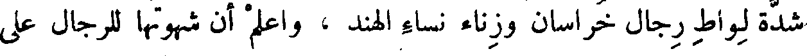
شدة لواط رجال خراسان وزناء نساء الهند ، واعلم أن شهوتها للرجال على
File: 000373.gt.txt (if the image is defective, simply delete all Arabic text and the line will be excluded)

قدر حظوتها عندهم ، واعلم أنها ستساحق النساء على أعراق الخراسانية ،
File: 000374.gt.txt (if the image is defective, simply delete all Arabic text and the line will be excluded)
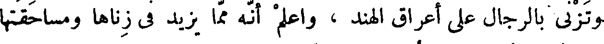
وتزني بالرجال على أعراق الهند ، واعلم أنه مما يزيد في زناها ومساحقتها
File: 000375.gt.txt (if the image is defective, simply delete all Arabic text and the line will be excluded)

معرفتها بالحظوة عند الزناة ، وبالحظ عند السحاقات(4) .
File: 000376.gt.txt (if the image is defective, simply delete all Arabic text and the line will be excluded)

ما الإيجاز ؟ قال : أن تجيب فلا تبطئ ، وتقول فلا تخطئ . قال معاوية :
File: 000377.gt.txt (if the image is defective, simply delete all Arabic text and the line will be excluded)
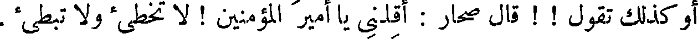
أو كذلك تقول ! ! قال صحار : أقلني يا أمير المؤمنين ! لا تخطئ ولا تبطئ .
File: 000378.gt.txt (if the image is defective, simply delete all Arabic text and the line will be excluded)
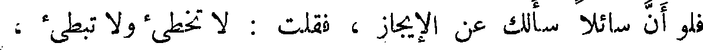
فلو أن سائلا سألك عن الإيجاز ، فقلت : لا تخطئ ولا تبطئ ،
File: 000379.gt.txt (if the image is defective, simply delete all Arabic text and the line will be excluded)

وبحضرتك خالد بن صفوان(1) ، لما عرف بالبديهة وعند أول وهلة ،
File: 000380.gt.txt (if the image is defective, simply delete all Arabic text and the line will be excluded)

أن قولك « لا تخطئ » متضمن بالقول ، وقولك « لا تبطئ » متضمن
File: 000381.gt.txt (if the image is defective, simply delete all Arabic text and the line will be excluded)

بالجواب . وهذا حديث كما ترى آثروه ورضوه ، ولو أن قائلا قال لبعضنا :
File: 000382.gt.txt (if the image is defective, simply delete all Arabic text and the line will be excluded)
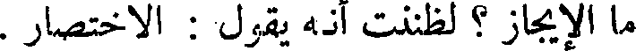
ما الإيجاز ؟ لظننت أنه يقول : الاختصار .
File: 000383.gt.txt (if the image is defective, simply delete all Arabic text and the line will be excluded)

والإيجاز ليس يعنى به قلة عدد الحروف واللفظ ، وقد يكون الباب من
File: 000384.gt.txt (if the image is defective, simply delete all Arabic text and the line will be excluded)

الكلام من أتى عليه فيما يسع بطن طومار(2) فقد أوجز ، وكذلك الإطالة ،
File: 000385.gt.txt (if the image is defective, simply delete all Arabic text and the line will be excluded)

وإنما ينبغي له أن يحذف بقدر مالا يكون سببا لإغلاقه ، ولا يردد وهو
File: 000386.gt.txt (if the image is defective, simply delete all Arabic text and the line will be excluded)
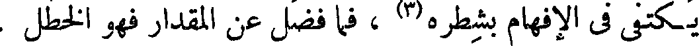
يكتفي في الإفهام بشطره(3) ، فما فضل عن المقدار فهو الخطل .
File: 000387.gt.txt (if the image is defective, simply delete all Arabic text and the line will be excluded)

( استغلاق كتب آبي الحسن الأخفش )
File: 000388.gt.txt (if the image is defective, simply delete all Arabic text and the line will be excluded)

المخنثين» . وذكر الهيثم عن الكاتب الذي تولى قراءة ذلك الكتاب ،
File: 000389.gt.txt (if the image is defective, simply delete all Arabic text and the line will be excluded)

أنه قال : وكيف يقولون ذلك ولقد كانت الخاء معجمة بنقطة ، كأنها
File: 000390.gt.txt (if the image is defective, simply delete all Arabic text and the line will be excluded)

سهيل [ أو تمرة صيحانية(1) ] ؟ ! فقال اليقطري(2) : ما وجه كتاب هشام
File: 000391.gt.txt (if the image is defective, simply delete all Arabic text and the line will be excluded)

في إحصاء عدد المخنثين ؟ وهذا لا معنى له ، وما كان الكتاب إلا بالخاء
File: 000392.gt.txt (if the image is defective, simply delete all Arabic text and the line will be excluded)

المعجمة دون الحاء المهملة . وذكر عن مشايخ من أهل المدينة أنهم حكوا
File: 000393.gt.txt (if the image is defective, simply delete all Arabic text and the line will be excluded)
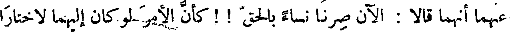
عنهما أنهما قالا : الآن صرنا نساء بالحق ! ! كأن الأمر لو كان إليهما لاختارا
File: 000394.gt.txt (if the image is defective, simply delete all Arabic text and the line will be excluded)

أن يكونا امرأتين ! قال : وذكر أنهما خرجا بالخصلتين من الخصاء والتخنيث،
File: 000395.gt.txt (if the image is defective, simply delete all Arabic text and the line will be excluded)
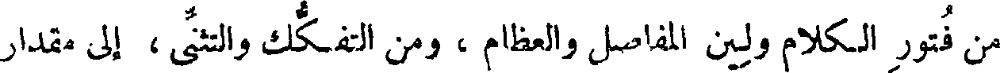
من فتور الكلام ولين المفاصل والعظام ، ومن التفكك والتثنى ، إلى مقدار
File: 000396.gt.txt (if the image is defective, simply delete all Arabic text and the line will be excluded)

لم يروا أحدا بلغه ، لا من مخنثات النساء ، ولا من مؤنثى الرجال .
File: 000397.gt.txt (if the image is defective, simply delete all Arabic text and the line will be excluded)

( أبو همام السنوط )
File: 000398.gt.txt (if the image is defective, simply delete all Arabic text and the line will be excluded)

وكما عرض لأبي همام السنوط (3) من امتلاخ اللخم مذاكيره
File: 000399.gt.txt (if the image is defective, simply delete all Arabic text and the line will be excluded)

وخصييه(4) ، أصابه ذلك في البحر في بعض المغازي(5) ، فسقطت لحيته ،
File: 000400.gt.txt (if the image is defective, simply delete all Arabic text and the line will be excluded)

ولقب بالسنوط ، وخرج لذلك نهما وشرها .
File: 000401.gt.txt (if the image is defective, simply delete all Arabic text and the line will be excluded)

تخرج من الحر إلى البرد فتضحك السن ، ولم تخرج من البرد إلى الحر
File: 000402.gt.txt (if the image is defective, simply delete all Arabic text and the line will be excluded)

باب
File: 000403.gt.txt (if the image is defective, simply delete all Arabic text and the line will be excluded)

فتضحك السن(1) ] .
File: 000404.gt.txt (if the image is defective, simply delete all Arabic text and the line will be excluded)

ذكر ما يعتري الإنسان بعد الخصاء
File: 000405.gt.txt (if the image is defective, simply delete all Arabic text and the line will be excluded)

وكيف ما كان قبل الخصاء
File: 000406.gt.txt (if the image is defective, simply delete all Arabic text and the line will be excluded)

قالوا : كل ذي ريح منتنة ، وكل ذي دفر وصنان كريه المشمة(2) ،
File: 000407.gt.txt (if the image is defective, simply delete all Arabic text and the line will be excluded)

كالنسر وما أشبهه ، فإنه متى خصي نقص نتنه وذهب صنانه ، غير
File: 000408.gt.txt (if the image is defective, simply delete all Arabic text and the line will be excluded)
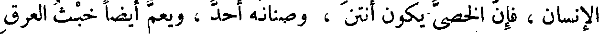
الإنسان، فإن الخصي يكون أنتن ، وصنانه أحد ، ويعم أيضا خبث العرق
File: 000409.gt.txt (if the image is defective, simply delete all Arabic text and the line will be excluded)

سائر جسده ، حتى لتوجد لأجسادهم رائحة لا تكون لغيرهم . فهذا هذا .
File: 000410.gt.txt (if the image is defective, simply delete all Arabic text and the line will be excluded)

وكل شيء من الحيوان يخصى فإن عظمه يدق ، فإذا دق عظمه
File: 000411.gt.txt (if the image is defective, simply delete all Arabic text and the line will be excluded)

استرخى لحمه ، وتبرأ من عظمه ، وعاد رخصا رطبا، بعد أن كان عضلا(3)
File: 000412.gt.txt (if the image is defective, simply delete all Arabic text and the line will be excluded)

صلبا، والإنسان إذا خصى طال عظمه وعرض ، فخالف أيضا جميع
File: 000413.gt.txt (if the image is defective, simply delete all Arabic text and the line will be excluded)
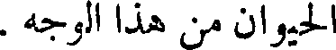
الحيوان من هذا الوجه .
File: 000414.gt.txt (if the image is defective, simply delete all Arabic text and the line will be excluded)

وتعرض للخصيان أيضا طول أقدام ، واعوجاج في أصابع اليد ،
File: 000415.gt.txt (if the image is defective, simply delete all Arabic text and the line will be excluded)

والتواء في أصابع الرجل ، وذلك من أول طعنهم في السن . وتعرض لهم
File: 000416.gt.txt (if the image is defective, simply delete all Arabic text and the line will be excluded)
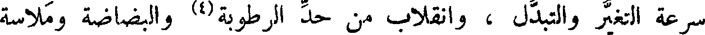
سرعة التغير والتبدل ، وانقلاب من حد الرطوبة(4) والبضاضة وملاسة
File: 000417.gt.txt (if the image is defective, simply delete all Arabic text and the line will be excluded)

الجلد ، وصفاء اللون ورقته ، وكثرة الماء و بريقه ، إلى التكرش والكمود ،
File: 000418.gt.txt (if the image is defective, simply delete all Arabic text and the line will be excluded)

العرب ، والشعر لا يستطاع أن يترجم ، ولا يجوز عليه النقل ؛ ومتى حول
File: 000419.gt.txt (if the image is defective, simply delete all Arabic text and the line will be excluded)

تقطع نظمه وبطل وزنه ، وذهب حسنه وسقط موضع التعجب ، [لا]
File: 000420.gt.txt (if the image is defective, simply delete all Arabic text and the line will be excluded)

كالكلام المنثور . والكلام المنثور المبتدأ على ذلك أحسن وأوقع من
File: 000421.gt.txt (if the image is defective, simply delete all Arabic text and the line will be excluded)

المنثور [ الذي تحول من ] موزون الشعر .
File: 000422.gt.txt (if the image is defective, simply delete all Arabic text and the line will be excluded)

قال : وجميع الأمم يحتاجون إلى الحكم في الدين ، والحكم في
File: 000423.gt.txt (if the image is defective, simply delete all Arabic text and the line will be excluded)

الصناعات ، وإلى كل ما أقام لهم المعاش وبوب لهم أبواب الفطن ،
File: 000424.gt.txt (if the image is defective, simply delete all Arabic text and the line will be excluded)

وعرفهم وجوه المرافق ؛ حديثهم كقديمهم ، وأسودهم كأحمرهم ، وبعيدهم
File: 000425.gt.txt (if the image is defective, simply delete all Arabic text and the line will be excluded)

كقريبهم ؛ والحاجة إلى ذلك شاملة لهم .
File: 000426.gt.txt (if the image is defective, simply delete all Arabic text and the line will be excluded)

وقد نقلت كتب الهند ، وترجمت حكم اليونانية ، وحولت آداب
File: 000427.gt.txt (if the image is defective, simply delete all Arabic text and the line will be excluded)

الفرس ؛ فبعضها ازداد حسنا ، وبعضها ما انتقص شيئا ، ولو حولت حكمة
File: 000428.gt.txt (if the image is defective, simply delete all Arabic text and the line will be excluded)

العرب ، لبطل ذلك المعجز الذي هو الوزن ؛ مع أنهم لو حولوها لم يجدوا في
File: 000429.gt.txt (if the image is defective, simply delete all Arabic text and the line will be excluded)

معانيها شيئا لم تذكره العجم في كتبهم ، التي وضعت لمعاشهم وفطنهم
File: 000430.gt.txt (if the image is defective, simply delete all Arabic text and the line will be excluded)
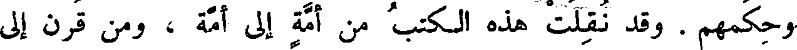
وحكمهم . وقد نقلت هذه الكتب من أمة إلى أمة ، ومن قرن إلى
File: 000431.gt.txt (if the image is defective, simply delete all Arabic text and the line will be excluded)

قرن ، ومن لسان إلى لسان ، حتى انتهت إلينا ، وكنا آخر من ورثها
File: 000432.gt.txt (if the image is defective, simply delete all Arabic text and the line will be excluded)
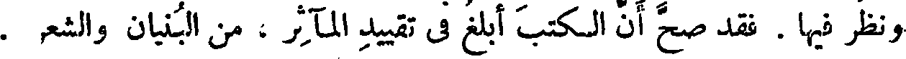
ونظر فيها . فقد صح أن الكتب أبلغ في تقييد المآثر ، من البنيان والشعر .
File: 000433.gt.txt (if the image is defective, simply delete all Arabic text and the line will be excluded)

ثم قال بعض من ينصر الشعر ويحوطه ويحتج له : إن الترجمان
File: 000434.gt.txt (if the image is defective, simply delete all Arabic text and the line will be excluded)

لا يؤدي أبدا ما قال الحكيم ، على خصائص معانيه ، وحقائق مذاهبه ،
File: 000435.gt.txt (if the image is defective, simply delete all Arabic text and the line will be excluded)

المعرفة ثقافا لها . واللسان لا يكون أبرأ ، ذاهبا في طريق البيان ، متصرفا في
File: 000436.gt.txt (if the image is defective, simply delete all Arabic text and the line will be excluded)

الألفاظ، إلا بعد أن تكون المعرفة متخللة به ، منقلة له،واضعة له في مواضع
File: 000437.gt.txt (if the image is defective, simply delete all Arabic text and the line will be excluded)
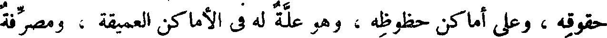
حقوقه ، وعلى أماكن حظوظه ، وهو علة له في الأماكن العميقة ، ومصرفة
File: 000438.gt.txt (if the image is defective, simply delete all Arabic text and the line will be excluded)

له في المواضع المختلفة .
File: 000439.gt.txt (if the image is defective, simply delete all Arabic text and the line will be excluded)

فأول ماصنع الخصاء بالصقلبي تزكية عقله ، وإرهاف حده ، وشحذ
File: 000440.gt.txt (if the image is defective, simply delete all Arabic text and the line will be excluded)
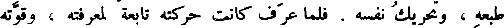
طبعه ، وتحريك نفسه . فلما عرف كانت حركته تابعة لمعرفته ، وقوته
File: 000441.gt.txt (if the image is defective, simply delete all Arabic text and the line will be excluded)

على قدر ما هيجه(1) .
File: 000442.gt.txt (if the image is defective, simply delete all Arabic text and the line will be excluded)

فأما نساء الصقالبة وصبيانهم ، فليس إلى تحويل طبائعهم ، ونقل خلقهم
File: 000443.gt.txt (if the image is defective, simply delete all Arabic text and the line will be excluded)

إلى الفطنة الثاقبة ، وإلى الحركة الموزونة ، وإلى الخدمة الثابتة الواقعة
File: 000444.gt.txt (if the image is defective, simply delete all Arabic text and the line will be excluded)

بالموافقة ، سبيل . وعلى حسب الجهل يكون الخرق ، وعلى حسب المعرفة
File: 000445.gt.txt (if the image is defective, simply delete all Arabic text and the line will be excluded)

يكون الحذق . وهذا جملة القول في نسائهم ، وعلى أنهن لا حظوظ لهن
File: 000446.gt.txt (if the image is defective, simply delete all Arabic text and the line will be excluded)
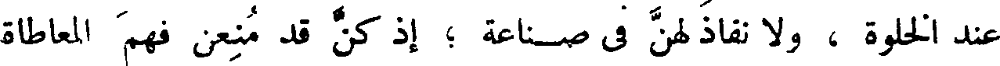
عند الخلوة ، ولا نفاذ لهن في صناعة ؛ إذ كن قد منعن فهم المعاطاة
File: 000447.gt.txt (if the image is defective, simply delete all Arabic text and the line will be excluded)

ومعرفة المناولة .
File: 000448.gt.txt (if the image is defective, simply delete all Arabic text and the line will be excluded)

والخصيان مع جودة آلاتهم ووفارة طبائعهم في معرفة أبواب
File: 000449.gt.txt (if the image is defective, simply delete all Arabic text and the line will be excluded)

الخدمة ، وفي استواء حالهم في باب المعاطاة ، لم تر أحدا منهم قط نفذ
File: 000450.gt.txt (if the image is defective, simply delete all Arabic text and the line will be excluded)

في صناعة تنسب إلى بعض المشقة ، وتضاف إلى شيء من الحكمة ، مما
File: 000451.gt.txt (if the image is defective, simply delete all Arabic text and the line will be excluded)

يعرف ببعد الروية ، والغوص بإدامة الفكرة ، إلا ما ذكروا من نفاذ
File: 000452.gt.txt (if the image is defective, simply delete all Arabic text and the line will be excluded)

ثقف(2) في التحريك للأوتار ، فإنه كان في ذلك مقدما ، وبه مذكورا .
File: 000453.gt.txt (if the image is defective, simply delete all Arabic text and the line will be excluded)

وأما الخصاء فهو أن يسل الخصيتين ، والوجاء أن توجأ العروق والخصيتان
File: 000454.gt.txt (if the image is defective, simply delete all Arabic text and the line will be excluded)

على حالهما . والمعصوب من التيوس الذي تعصب خصيتاه حتى تسقطا .
File: 000455.gt.txt (if the image is defective, simply delete all Arabic text and the line will be excluded)

بعروقهما . والصفن : جلدة الخصيتين .
File: 000456.gt.txt (if the image is defective, simply delete all Arabic text and the line will be excluded)

( خصاء البهائم و الديكة )
File: 000457.gt.txt (if the image is defective, simply delete all Arabic text and the line will be excluded)

والخصاء في أحداث البهائم ، وفي الغنم خاصة ، يدع اللحم رخصا
File: 000458.gt.txt (if the image is defective, simply delete all Arabic text and the line will be excluded)

ونديا عذبا ؛ فإن خصاه بعد الكبر،لم يقو خصاؤه - بعد استحكام القوة -
File: 000459.gt.txt (if the image is defective, simply delete all Arabic text and the line will be excluded)

على قلب طباعه . وأجود الخصاء ما كان في الصغر ، وهو يسمى بالفارسية
File: 000460.gt.txt (if the image is defective, simply delete all Arabic text and the line will be excluded)

ثربخت(1) يعنى بذلك أنه خصى رطبا . والخصى من فحولها أحمل
File: 000461.gt.txt (if the image is defective, simply delete all Arabic text and the line will be excluded)

للشحم ، لعدم الهيج والنعظ ، وخروج قواه مع ماء الفحلة(2) . وكثرة
File: 000462.gt.txt (if the image is defective, simply delete all Arabic text and the line will be excluded)

السفاد تورث الضعف والهزال في جميع الحيوان . وقد ذكر لمعاوية
File: 000463.gt.txt (if the image is defective, simply delete all Arabic text and the line will be excluded)

كثرة الجماع فقال : ما استهتر به أحد إلا رأيت ذلك في منته(3) .
File: 000464.gt.txt (if the image is defective, simply delete all Arabic text and the line will be excluded)

والديك يخصى ليرطب لحمه ويطيب ويحمل الشحم .
File: 000465.gt.txt (if the image is defective, simply delete all Arabic text and the line will be excluded)

( خصاء العرب لفحولة الإبل )
File: 000466.gt.txt (if the image is defective, simply delete all Arabic text and the line will be excluded)

وكانت العرب تخصى فحولة الإبل لئلا يأكل بعضها بعضا ،
File: 000467.gt.txt (if the image is defective, simply delete all Arabic text and the line will be excluded)

السامع لما فيه من الروية ، ويحتاج من اللفظ إلى مقدار يرتفع به عن
File: 000468.gt.txt (if the image is defective, simply delete all Arabic text and the line will be excluded)

45 ألفاظ السفلة والحشو(1) ، ويحطه من غريب الأعراب ووحشي الكلام ،
File: 000469.gt.txt (if the image is defective, simply delete all Arabic text and the line will be excluded)

وليس له أن يهذبه جدا ، وينقحه ويصفيه ويروقه ، حتى لاينطق
File: 000470.gt.txt (if the image is defective, simply delete all Arabic text and the line will be excluded)

إلا بلب اللب ، وباللفظ الذي قد حذف فضوله ، وأسقط زوائده(2) ،
File: 000471.gt.txt (if the image is defective, simply delete all Arabic text and the line will be excluded)

حتى عاد خالصا لا شوب فيه ؛ فإنه إن فعل ذلك ، لم يفهم عنه إلا بأن
File: 000472.gt.txt (if the image is defective, simply delete all Arabic text and the line will be excluded)

يجدد لهم إفهاما مرارا وتكرارا ، لأن الناس كلهم قد تعودوا المبسوط من
File: 000473.gt.txt (if the image is defective, simply delete all Arabic text and the line will be excluded)

الكلام ، وصارت أفهامهم لا تزيد على عاداتهم إلا بأن يعكس عليها
File: 000474.gt.txt (if the image is defective, simply delete all Arabic text and the line will be excluded)

ويؤخذ بها . ألا ترى أن كتاب المنطق الذي قد وسم بهذا الاسم ،
File: 000475.gt.txt (if the image is defective, simply delete all Arabic text and the line will be excluded)

لو قرأته على جميع خطباء الأمصار وبلغاء الأعراب ، لما فهموا أكثره ،
File: 000476.gt.txt (if the image is defective, simply delete all Arabic text and the line will be excluded)

وفي كتاب إقليدس كلام يدور ، وهو عربي وقد صفي ، ولو سمعه بعض
File: 000477.gt.txt (if the image is defective, simply delete all Arabic text and the line will be excluded)

الخطباء لما فهمه ، ولا يمكن أن يفهمه من يريد تعليمه ، لأنه يحتاج إلى
File: 000478.gt.txt (if the image is defective, simply delete all Arabic text and the line will be excluded)

أن يكون قد عرف جهة الأمر ، وتعود اللفظ المنطقي الذي استخرج
File: 000479.gt.txt (if the image is defective, simply delete all Arabic text and the line will be excluded)

من جميع الكلام .
File: 000480.gt.txt (if the image is defective, simply delete all Arabic text and the line will be excluded)

( قول صحار العبدي في الإيجاز ، و نقده )
File: 000481.gt.txt (if the image is defective, simply delete all Arabic text and the line will be excluded)

قال معاوية بن أبي سفيان ، رضي الله عنهما، لصحار العبدي(2) :
File: 000482.gt.txt (if the image is defective, simply delete all Arabic text and the line will be excluded)

وقال ذات يوم : لو كان النخل بعضه لا يحمل إلا الرطب ، وبعضه
File: 000483.gt.txt (if the image is defective, simply delete all Arabic text and the line will be excluded)

لا يحمل إلا التمر ،وبعضه لا يحمل إلا المجزع(1) ، وبعضه لا يحمل إلا البسر، 56
File: 000484.gt.txt (if the image is defective, simply delete all Arabic text and the line will be excluded)

وبعضه لا يحمل إلا الخلال ، وكنا متى تناولنا من الشمراخ بسرة ، خلق
File: 000485.gt.txt (if the image is defective, simply delete all Arabic text and the line will be excluded)

الله مكانها بسرتين ، لما كان بذلك بأس ! ثم قال : أستغفر الله !
File: 000486.gt.txt (if the image is defective, simply delete all Arabic text and the line will be excluded)

لو كنت تمنيت أن يكون بدل نواة التمر زبدة كان أصوب ! !
File: 000487.gt.txt (if the image is defective, simply delete all Arabic text and the line will be excluded)

ومنه ما يعرض من جهة الأوجاع التي تعرض للمذاكير والخصيتين ،
File: 000488.gt.txt (if the image is defective, simply delete all Arabic text and the line will be excluded)

حتى ربما امتلخهما طبيب ، وربما قطع إحداهما ، وربما سقطتا جميعا
File: 000489.gt.txt (if the image is defective, simply delete all Arabic text and the line will be excluded)

( نسل منزوع البيضة اليسرى )
File: 000490.gt.txt (if the image is defective, simply delete all Arabic text and the line will be excluded)

من تلقاء أنفسهما .
File: 000491.gt.txt (if the image is defective, simply delete all Arabic text and the line will be excluded)

والعوام يزعمون أن الولد إنما يكون من البيضة اليسرى(2) . وقد
File: 000492.gt.txt (if the image is defective, simply delete all Arabic text and the line will be excluded)

زعم ناس من أهل سليمان بن علي ومواليهم ، أن ولد داود بن جعفر
File: 000493.gt.txt (if the image is defective, simply delete all Arabic text and the line will be excluded)

الخطيب المعتزلي ، إنما ولد له بعد أن نزعت بيضته اليسرى ، لأمر كان
File: 000494.gt.txt (if the image is defective, simply delete all Arabic text and the line will be excluded)

عرض له .
File: 000495.gt.txt (if the image is defective, simply delete all Arabic text and the line will be excluded)

والخصي الطيان . الذي كان في مسجد آبن رغبان(3) ، ولد له
File: 000496.gt.txt (if the image is defective, simply delete all Arabic text and the line will be excluded)

غلام ، وكان ليس له إلا البيضة اليمنى ، فجاء أشبه به من الذباب بالذباب
File: 000497.gt.txt (if the image is defective, simply delete all Arabic text and the line will be excluded)

والغراب بالغراب ، ولو أبصره أجهل خلق الله تعالى بفراسة ، وأبعدهم من
File: 000498.gt.txt (if the image is defective, simply delete all Arabic text and the line will be excluded)

قيافة ، ومن مخالطة النخاسين ، أو من مجالسة الأعراب ، لعلم أنه سلالته
File: 000499.gt.txt (if the image is defective, simply delete all Arabic text and the line will be excluded)

خلال ذلك ، ووافقت امرأة تحسن الاختيار ، وتفهم الأمور ، فوجدت
File: 000500.gt.txt (if the image is defective, simply delete all Arabic text and the line will be excluded)

لذلك الجمز راحة ، ومع الراحة لذة ، فأمرتهم أن يسيروا بها في تلك السيرة،
File: 000501.gt.txt (if the image is defective, simply delete all Arabic text and the line will be excluded)

فما زالوا يقربون ويبعدون ، ويخطئون ويصيبون ، وهي في كل ذلك تصوبهم